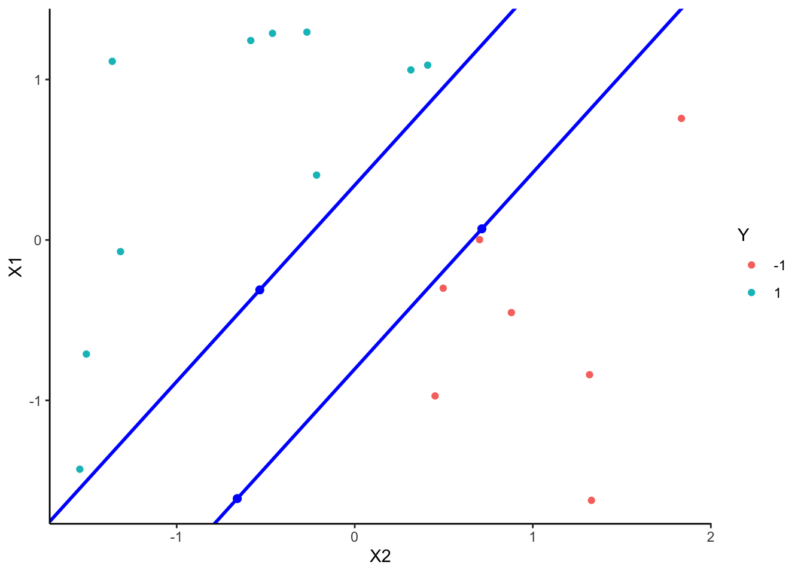
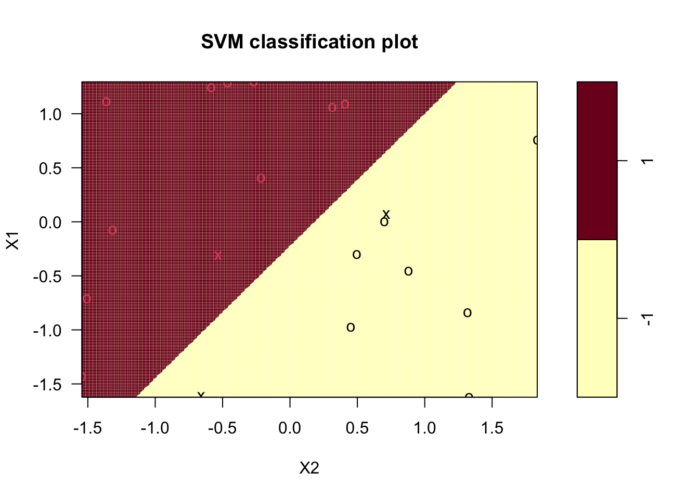
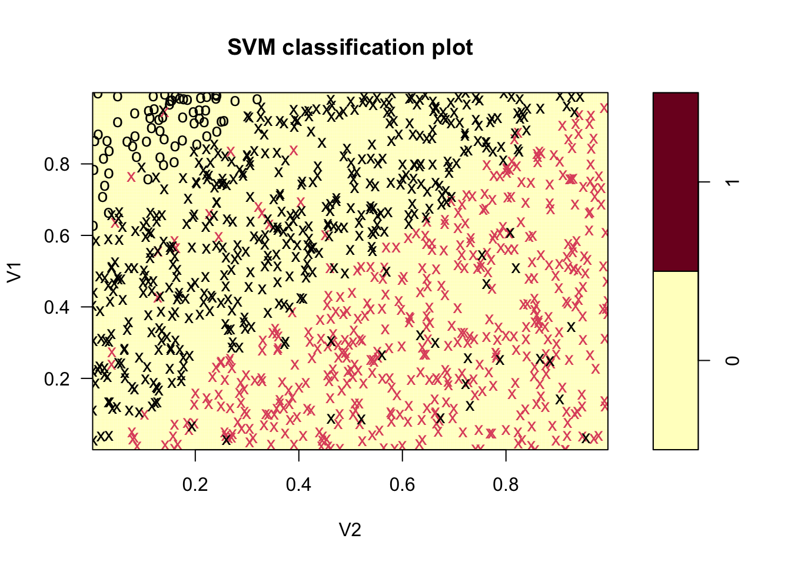
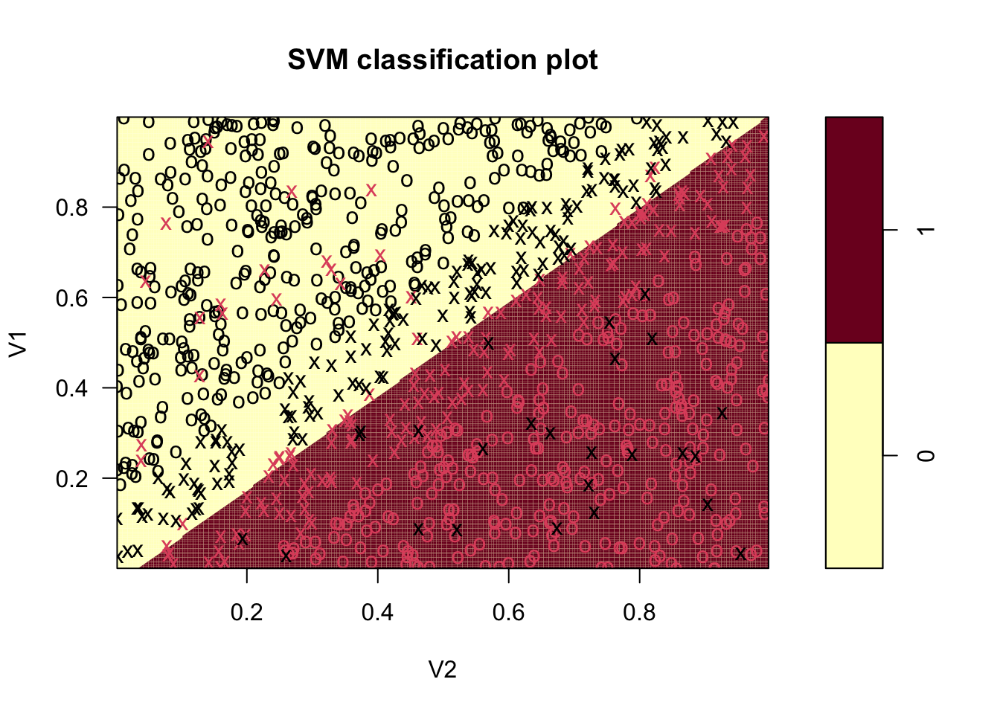
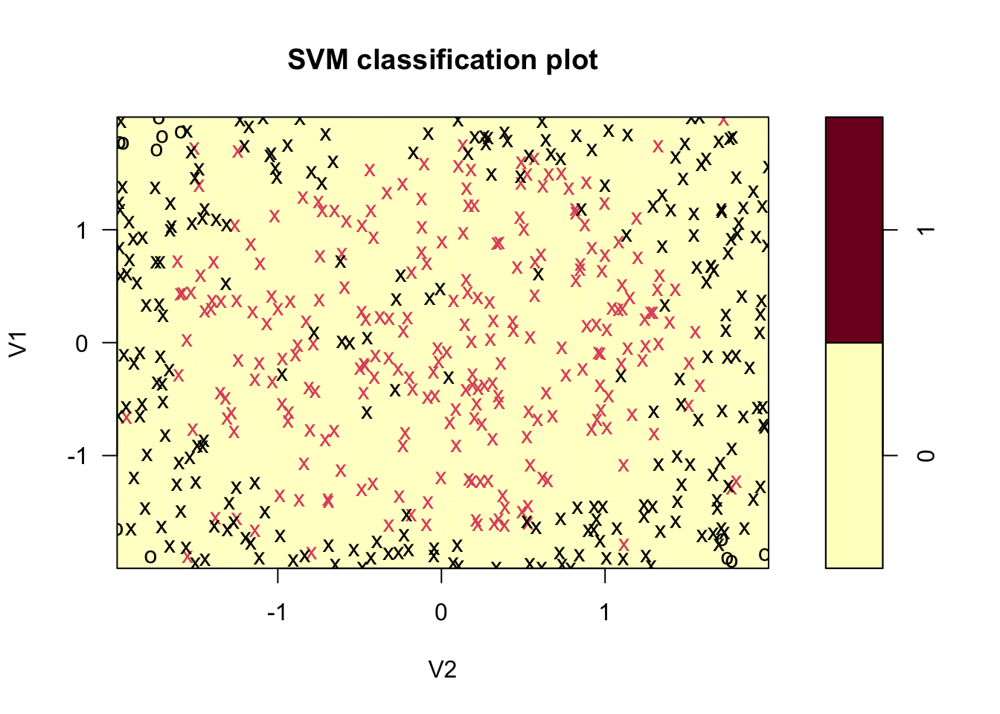
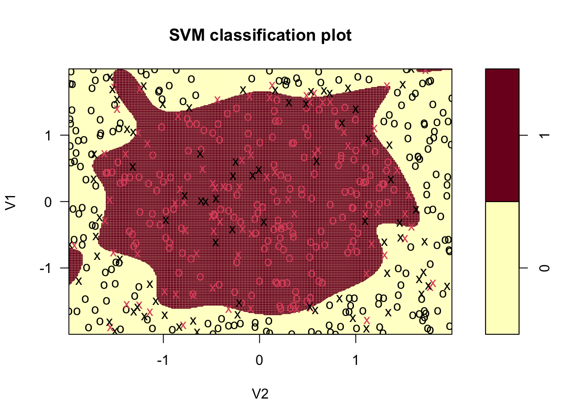
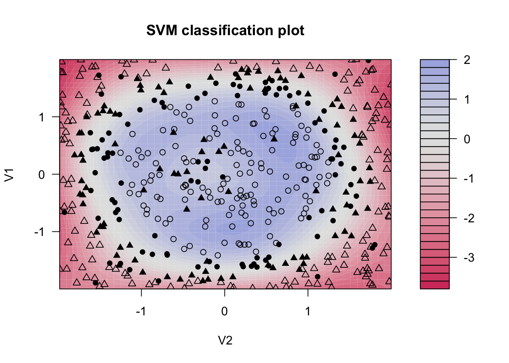

Chapitre 2 Support Vector Machine (SVM)
Etant donnée un échantillon \((x_1,y_1),\dots,(x_n,y_n)\) où les \(x_i\) sont à valeurs dans \(\mathbb R^p\) et les \(y_i\) sont binaires à valeurs dans \(\{-1,1\}\), l’approche SVM cherche le meilleur hyperplan en terme de séparation des données. Globalement on veut que les 1 se trouvent d’un coté de l’hyperplan et les -1 de l’autre. Dans cette partie on propose d’étudier la mise en œuvre de cet algorithme tout d’abord dans le cas idéal où les données sont séparables puis dans le cas plus réel où elles ne le sont pas. Nous verrons ensuite comment introduire de la non linéarité ne utilisant l’astuce du noyau.
2.1 Cas séparable
Le cas séparable est le cas facile : il correspond à la situation où il existe effectivement un (même plusieurs) hyperplan(s) qui sépare(nt) parfaitement les 1 des -1. Il n’arrive jamais en pratique mais il convient de l’étudier pour comprendre comment est construit l’algorithme. Dans ce cas on cherche l’hyperplan d’équation \(\langle w,x\rangle+b=w^tx+b=0\) tel que la marge (qui peut être vue comme la distance entre les observations les plus priche de l’hyperplan et l’hyperplan) soit maximale. Mathématiquement le problème se réécrit comme un problème d’optimisation sous contraintes :
\[\begin{equation} \min_{w,b}\frac{1}{2}\|w\|^2 \tag{2.1} \end{equation}\] \[\text{sous les contraintes } y_i(w^tx_i+b)\geq 1,\ i=1,\dots,n.\]
La solution s’obtient de façon classique en résolvant le problème dual et elle s’écrit comme une combinaison linéaire des \(x_i\) \[w^\star=\sum_{i=1}^n\alpha_i^\star y_ix_i.\] De plus, les conditions KKT impliquent que pour tout \(i=1,\dots,n\):
- \(\alpha_i^\star=0\)
ou
- \(y_i(x_i^tw+b)-1=0.\)
Ces conditions entraînent que \(w^\star\) s’écrit comme uen combinaison linéaire de quelques points qui se trouvent sur la marge. Nous proposons maintenant de retrouver ces points et de tracer la marge sur un exemple simple.
On considère le nuage de points suivant :
n <- 20
set.seed(123)
X1 <- scale(runif(n))
set.seed(567)
X2 <- scale(runif(n))
Y <- rep(-1,n)
Y[X1>X2] <- 1
Y <- as.factor(Y)
donnees <- data.frame(X1=X1,X2=X2,Y=Y)
p <- ggplot(donnees)+aes(x=X2,y=X1,color=Y)+geom_point()
p
La fonction svm du package e1071 permet d’ajuster une SVM :
Récupérer les vecteurs supports et visualiser les sur le graphe. On les affectera à un data.frame dont les 2 premières colonnes représenteront les valeurs de \(X_1\) et \(X_2\) des vecteurs supports.
Les vecteurs supports se trouvent dans la sortie
indexde la fonction svm :X1 X2 Y 1 -1.61179777 -0.6599042 -1 2 0.06962369 0.7140262 -1 3 -0.31095135 -0.5332139 1On peut ainsi représenter la marge en traçant les droites qui passent par ces points.
sv1 <- sv[,2:1] b <- (sv1[1,2]-sv1[2,2])/(sv1[1,1]-sv1[2,1]) a <- sv1[1,2]-b*sv1[1,1] a1 <- sv1[3,2]-b*sv1[3,1] p1+geom_abline(intercept = c(a,a1),slope=b,col="blue",size=1)
Retrouver ce graphe à l’aide de la fonction plot.

Rappeler la règle de décision associée la méthode SVM. Donner les estimations des paramètres de la règle de décision sur cet exemple. On pourra notamment regarder la sortie
coefde la fonction svm.Une fois \(w^\star\) et \(b^\star\) obtenus, la règle s’écrit \[g(x)=1_{\langle w^\star,x\rangle+b^\star\leq 0}-1_{\langle w^\star,x\rangle+b^\star>0}.\]
L’objet
mod.svm$coefscontient les coefficients \(\alpha_i^\star y_i\) pour chaque vecteur support. On peut ainsi récupérer l’équation de l’hyperplan et faire la prévision avecX1 X2 -1.745100 2.136029[1] -0.4035113L’hyperplan séparateur a donc pour équation : \[-1.74x_1+2.12x_2-0.40=0.\]
On dispose d’un nouvel individu \(x=(-0.5,0.5)\). Expliquer comment on peut prédire son groupe.
Il suffit de calculer \(\langle w^\star,x\rangle+b\) et de prédire en fonction du signe de cette valeur :
[1] 1.537053On prédira le groupe
-1pour ce nouvel individu.Retrouver les résultats de la question précédente à l’aide de la fonction predict. On pourra utiliser l’option
decision.values = TRUE.1 -1 attr(,"decision.values") -1/1 1 1.537053 Levels: -1 1Plus cette valeur est élevée, plus on est loin de l’hyperplan. On peut donc l’interpréter comme un score.
Obtenir les probabilités prédites à l’aide de la fonction predict. On pourra utiliser
probability=TRUEdans la fonction svm.mod.svm1 <- svm(Y~.,data=donnees,kernel="linear",cost=10000000000,probability=TRUE) predict(mod.svm1,newX,decision.values=TRUE,probability=TRUE)1 -1 attr(,"decision.values") -1/1 1 1.537053 attr(,"probabilities") -1 1 1 0.8294474 0.1705526 Levels: -1 1Comme souvent, il est possible d’obtenir une estimation des probabilités d’être dans les groupes
-1et1à partir du score, il “suffit” de ramener ce score sur l’échelle \([0,1]\) avec des transformations de type logit par exemple. Pour la svm, ces probabilités sont obtenues en ajustant un modèle logistique sur les scores \(S(x)\) : \[P(Y=1|X=x)=\frac{1}{1+\exp(aS(x)+b)}.\] On peut retrouver ces probabilités avec :[1] 0.1705526
2.2 Cas non séparable
Dans la vraie vie, les groupes ne sont généralement pas séparables et il n’existe donc pas de solution au problème (2.1). On va donc autoriser certains points à être :
- mal classés
et/ou
- bien classés mais à l’intérieur de la marge.
Mathématiquement, cela revient à introduire des variables ressorts (slacks variables) \(\xi_1,\dots,\xi_n\) positives telles que :
- \(\xi_i\in [0,1]\Longrightarrow\) \(i\) bien classé mais dans la région définie par la marge ;
- \(\xi_i>1 \Longrightarrow\) \(i\) mal classé.
Le problème d’optimisation devient alors minimiser en \((w,b,\xi)\) \[\frac{1}{2}\|w\|^2 +C\sum_{i=1}^n\xi_i\] \[\textrm{sous les contraintes } \left\{ \begin{array}{l} y_i(w^tx_i+b)\geq 1 -\xi_i \\ \xi_i\geq 0, i=1,\dots,n. \end{array}\right.\] Le paramètre \(C>0\) est à calibrer et on remarque que le cas séparable correspond à \(C\to +\infty\). Les solutions de ce nouveau problème d’ptimisation s’obtiennent de la même façon que dans le cas séparable, en particulier \(w^\star\) s’écrite toujours comme une combinaison linéaire \[w^\star=\sum_{i=1}^n\alpha_i^\star y_ix_i.\] de vecteurs supports sauf qu’on distingue deux cas de vecteurs supports (\(\alpha_i^\star>0\)):
- ceux sur la frontière définie par la marge : \(\xi_i^\star=0\) ;
- ceux en dehors : \(\xi_i^\star>0\) et \(\alpha_i^\star=C\).
Le choix de \(C\) est crucial : ce paramètre régule le compromis biais/variance de la svm :
- \(C\searrow\): la marge est privilégiée et les \(\xi_i\nearrow\) \(\Longrightarrow\) beaucoup d’observations dans la marge ou mal classées (et donc beaucoup de vecteurs supports).
- \(C\nearrow\Longrightarrow\) \(\xi_i\searrow\) donc moins d’observations mal classées \(\Longrightarrow\) meilleur ajustement mais petite marge \(\Longrightarrow\) risque de surajustement.
On choisit généralement ce paramètre à l’aide des techiques présentées dans le chapitre 1 :
- choix d’une grille de valeurs de \(C\) et d’un critère ;
- choix d’une méthode de ré-échantillonnage pour estimer le critère ;
- choix de la valeur de \(C\) qui minimise le critère estimé.
On considère le jeu de données df3 définie ci-dessous.
n <- 1000
set.seed(1234)
df <- as.data.frame(matrix(runif(2*n),ncol=2))
df1 <- df %>% filter(V1<=V2)%>% mutate(Y=rbinom(nrow(.),1,0.95))
df2 <- df %>% filter(V1>V2)%>% mutate(Y=rbinom(nrow(.),1,0.05))
df3 <- bind_rows(df1,df2) %>% mutate(Y=as.factor(Y))
ggplot(df3)+aes(x=V2,y=V1,color=Y)+geom_point()+
scale_color_manual(values=c("#FFFFC8", "#7D0025"))+
theme(panel.background = element_rect(fill = "#BFD5E3", colour = "#6D9EC1",size = 2, linetype = "solid"),
panel.grid.major = element_blank(),
panel.grid.minor = element_blank())
Ajuster 3 svm en considérant comme valeur de \(C\) : 0.000001, 0.1 et 5. On pourra utiliser l’option
cost.Calculer les nombres de vecteurs supports pour chaque valeur de \(C\).
[1] 469 469[1] 178 178[1] 150 150Visualiser les 3 svm obtenues. Interpréter.


Pour \(C\) petit, toutes les observations sont classées
0, la marge est grande et le nombre de vecteurs supports importants. On remarque que ces deux quantités diminuent lorsque \(C\) augmente.
2.3 L’astuce du noyau
Les SVM présentées précédemment font l’hypothèse que les groupes sont linéairement séparables, ce qui n’est bien entendu pas toujours le cas en pratique. L’astuce du noyau permet de mettre de la non linéarité, elle consiste à :
- plonger les données dans un nouvel espace appelé espace de représentation ou feature space
- appliquer une svm linéaire dans ce nouvel espace.
Le terme astuce vient du fait que ce procédé ne nécessite pas de connaître explicitement ce nouvel espace : pour résoudre le problème d’optimisation dans le faeture space on a juste besoin de connaître le noyau associé au feature space. D’un point de vu formel un noyau est une fonction \[K:\mathcal X\times\mathcal X\to\mathbb R\] dont les propriétés sont proches d’un produit scalaire. Il existe donc tout un tas de noyau avec lesquels on peut faire des SVM, par exemple
- Linéaire (sur \(\mathbb R^d\)) : \(K(x,x')=x^tx'\).
- Polynomial (sur \(\mathbb R^d\)) : \(K(x,x')=(x^tx'+1)^d\).
- Gaussien (Gaussian radial basis function ou RBF) (sur \(\mathbb R^d\)) \[K(x,x')=\exp\left(-\frac{\|x-x'\|}{2\sigma^2}\right).\]
- Laplace (sur \(\mathbb R\)) : \(K(x,x')=\exp(-\gamma|x-x'|)\).
- Noyau min (sur \(\mathbb R^+\)) : \(K(x,x')=\min(x,x')\).
- …
Bien entendu, en pratique tout le problème va consister à trouver le bon noyau !
On considère le jeu de données suivant où le problème est d’expliquer \(Y\) par \(V1\) et \(V2\).
n <- 500
set.seed(13)
X <- matrix(runif(n*2,-2,2),ncol=2) %>% as.data.frame()
Y <- rep(0,n)
cond <- (X$V1^2+X$V2^2)<=2.8
Y[cond] <- rbinom(sum(cond),1,0.9)
Y[!cond] <- rbinom(sum(!cond),1,0.1)
df <- X %>% mutate(Y=as.factor(Y))
ggplot(df)+aes(x=V2,y=V1,color=Y)+geom_point()+theme_classic()
Ajuster une svm linéaire et visualiser l’hyperplan séparateur. Que remarquez-vous ?
La svm linéaire ne permet pas de séparer les groupes (on pouvait s’y attendre).
Exécuter la commande suivante et commenter la sortie.

Le noyau radial permet de mettre en évidence une séparation non linéaire.
Faire varier les paramètres gamma et cost. Interpréter (on pourra notamment étudier l’évolution du nombre de vecteurs supports en fonction du paramètre cost).
mod.svm2 <- svm(Y~.,data=df,kernel="radial",gamma=1,cost=0.0001) mod.svm3 <- svm(Y~.,data=df,kernel="radial",gamma=1,cost=1) mod.svm4 <- svm(Y~.,data=df,kernel="radial",gamma=1,cost=100000) plot(mod.svm2,df,grid=250)


[1] 244 244[1] 114 114[1] 78 77Le nombre de vecteurs supports diminue lorsque \(C\) augmente. Une forte valeur de \(C\) autorise moins d’observations à être dans la marge, elle a donc tendance à diminuer (risque de surapprentissage).
Sélectionner automatiquement ces paramètres. On pourra utiliser la fonction tune en faisant varier C dans c(0.1,1,10,100,1000) et gamma dans c(0.5,1,2,3,4).
set.seed(1234) tune.out <- tune(svm,Y~.,data=df,kernel="radial", ranges=list(cost=c(0.1,1,10,100,1000),gamma=c(0.5,1,2,3,4))) summary(tune.out)Parameter tuning of 'svm': - sampling method: 10-fold cross validation - best parameters: cost gamma 10 0.5 - best performance: 0.108 - Detailed performance results: cost gamma error dispersion 1 1e-01 0.5 0.182 0.04565572 2 1e+00 0.5 0.148 0.03155243 3 1e+01 0.5 0.108 0.03425395 4 1e+02 0.5 0.116 0.03373096 5 1e+03 0.5 0.112 0.03425395 6 1e-01 1.0 0.184 0.04402020 7 1e+00 1.0 0.120 0.03651484 8 1e+01 1.0 0.120 0.03126944 9 1e+02 1.0 0.112 0.03155243 10 1e+03 1.0 0.120 0.03887301 11 1e-01 2.0 0.170 0.04136558 12 1e+00 2.0 0.124 0.02458545 13 1e+01 2.0 0.122 0.03457681 14 1e+02 2.0 0.124 0.03502380 15 1e+03 2.0 0.142 0.03705851 16 1e-01 3.0 0.160 0.03651484 17 1e+00 3.0 0.124 0.02458545 18 1e+01 3.0 0.126 0.03134042 19 1e+02 3.0 0.132 0.04022161 20 1e+03 3.0 0.166 0.03272783 21 1e-01 4.0 0.154 0.03777124 22 1e+00 4.0 0.124 0.02458545 23 1e+01 4.0 0.126 0.03134042 24 1e+02 4.0 0.138 0.04467164 25 1e+03 4.0 0.190 0.05754226La sélection est faite en minimisant l’erreur de classification par validation croisée 10 blocs.
Faire de même avec caret, on utilisera method=“svmRadial” et prob.model=TRUE.
C <- c(0.001,0.01,1,10,100,1000) sigma <- c(0.5,1,2,3,4) gr <- expand.grid(C=C,sigma=sigma) ctrl <- trainControl(method="cv") res.caret1 <- train(Y~.,data=df,method="svmRadial",trControl=ctrl,tuneGrid=gr,prob.model=TRUE) res.caret1Support Vector Machines with Radial Basis Function Kernel 500 samples 2 predictor 2 classes: '0', '1' No pre-processing Resampling: Cross-Validated (10 fold) Summary of sample sizes: 449, 450, 451, 450, 449, 450, ... Resampling results across tuning parameters: C sigma Accuracy Kappa 1e-03 0.5 0.8359976 0.6734429 1e-03 1.0 0.8439584 0.6890006 1e-03 2.0 0.8398359 0.6806352 1e-03 3.0 0.8578816 0.7164180 1e-03 4.0 0.8577623 0.7162786 1e-02 0.5 0.8400384 0.6813511 1e-02 1.0 0.8419584 0.6851382 1e-02 2.0 0.8458784 0.6926478 1e-02 3.0 0.8518407 0.7044624 1e-02 4.0 0.8577623 0.7162786 1e+00 0.5 0.8676871 0.7347434 1e+00 1.0 0.8857719 0.7713024 1e+00 2.0 0.8838127 0.7672737 1e+00 3.0 0.8798519 0.7594972 1e+00 4.0 0.8838928 0.7675507 1e+01 0.5 0.8798095 0.7596483 1e+01 1.0 0.8818111 0.7634823 1e+01 2.0 0.8838928 0.7676862 1e+01 3.0 0.8778503 0.7554248 1e+01 4.0 0.8720480 0.7438434 1e+02 0.5 0.8818111 0.7635668 1e+02 1.0 0.8839320 0.7677447 1e+02 2.0 0.8680480 0.7359331 1e+02 3.0 0.8517231 0.7031601 1e+02 4.0 0.8377591 0.6749363 1e+03 0.5 0.8760088 0.7521217 1e+03 1.0 0.8760496 0.7520939 1e+03 2.0 0.8498816 0.6998254 1e+03 3.0 0.8297967 0.6590033 1e+03 4.0 0.8100352 0.6192088 Accuracy was used to select the optimal model using the largest value. The final values used for the model were sigma = 1 and C = 1.On peut également répéter plusieurs fois la validation croisée pour stabiliser les résultats (on parallélise avec doParallel) :
library(doParallel) ## pour paralléliser cl <- makePSOCKcluster(4) registerDoParallel(cl) set.seed(12345) ctrl <- trainControl(method="repeatedcv",number=10,repeats=5) res.caret2 <- train(Y~.,data=df,method="svmRadial",trControl=ctrl,tuneGrid=gr,prob.model=TRUE) on.exit(stopCluster(cl)) res.caret2Support Vector Machines with Radial Basis Function Kernel 500 samples 2 predictor 2 classes: '0', '1' No pre-processing Resampling: Cross-Validated (10 fold, repeated 5 times) Summary of sample sizes: 450, 449, 450, 451, 450, 449, ... Resampling results across tuning parameters: C sigma Accuracy Kappa 1e-03 0.5 0.8222641 0.6462662 1e-03 1.0 0.8458598 0.6928018 1e-03 2.0 0.8507000 0.7022920 1e-03 3.0 0.8555163 0.7118454 1e-03 4.0 0.8607898 0.7222353 1e-02 0.5 0.8242566 0.6502516 1e-02 1.0 0.8462519 0.6935931 1e-02 2.0 0.8499238 0.7007974 1e-02 3.0 0.8543078 0.7094622 1e-02 4.0 0.8639097 0.7284572 1e+00 0.5 0.8640626 0.7275460 1e+00 1.0 0.8839933 0.7678344 1e+00 2.0 0.8843858 0.7685479 1e+00 3.0 0.8823531 0.7644392 1e+00 4.0 0.8799766 0.7596759 1e+01 0.5 0.8848178 0.7696785 1e+01 1.0 0.8803851 0.7606211 1e+01 2.0 0.8775757 0.7549666 1e+01 3.0 0.8751989 0.7501291 1e+01 4.0 0.8727989 0.7453460 1e+02 0.5 0.8815531 0.7631204 1e+02 1.0 0.8751107 0.7501217 1e+02 2.0 0.8743443 0.7484731 1e+02 3.0 0.8615653 0.7229593 1e+02 4.0 0.8507228 0.7011391 1e+03 0.5 0.8803600 0.7607328 1e+03 1.0 0.8731277 0.7462531 1e+03 2.0 0.8499715 0.7000011 1e+03 3.0 0.8319834 0.6640949 1e+03 4.0 0.8089513 0.6174340 Accuracy was used to select the optimal model using the largest value. The final values used for the model were sigma = 0.5 and C = 10.Visualiser la règle sélectionnée.
caret utilise la fonction ksvm du package kernlab. Ce package propose un choix plus large pour les noyaux. Par conséquent, si on souhaite visualiser la svm sélectionnée par caret, il est préférable d’utiliser cette fonction.
library(kernlab) C.opt <- res.caret2$bestTune$C sigma.opt <- res.caret2$bestTune$sigma svm.sel <- ksvm(Y~.,data=df,kernel="rbfdot",kpar=list(sigma=sigma.opt),C=C.opt) plot(svm.sel,data=df)
2.4 Exercices
On considère \(n\) observations \((x_1,y_1),\dots,(x_n,y_n)\) telles que \((x_i,y_i)\in\mathbb R^p\times\{-1,1\}\). On cherche à expliquer la variable \(Y\) par \(X\). On considère l’algorithme SVM et on se place dans le cas où les données sont séparables.
Soit \(\mathcal H\) un hyperplan séparateur d’équation \(\langle w,x\rangle+b=0\) où \(w\in\mathbb R^p,b\in\mathbb R\). Exprimer la distance entre \(x_i,i=1,\dots,n\) et \(\mathcal H\) en fonction de \(w\) et \(b\).
Soit \(x_0\in\mathcal H\). La solution correspond à la norme du projeté orthogonal de \(x-x_0\) sur \(\mathcal H\), elle est donc colinéaire à \(w\) (car \(w\) est normal à \(\mathcal H\)) et s’écrit \[\frac{\langle x-x_0,w\rangle}{\|w\|}w=\frac{\langle x,w\rangle}{\|w\|}w-\frac{\langle x_0,w\rangle}{\|w\|}w,\] Comme \(\langle x_0,w\rangle=-b\), on déduit \(d_{\mathcal H}(x)=\frac{|\langle w,x\rangle+b|}{\|w\|}=x^tw+b\) si \(\|w\|=1\).
Expliquer la logique du problème d’optimisation \[\max_{w,b,\|w\|=1}M\] \[\textrm{sous les contraintes } y_i(\langle w,x_i\rangle+b)\geq M,\ i=1,\dots,n.\]
L’approche consiste à choisir l’hyperplan :
-
qui sépare les groupes ;
-
tel que la distance entre les observations et lui soit maximale.
-
Montrer que ce problème peut se réécrire \[\min_{w,b}\frac{1}{2}\|w\|^2\] \[\textrm{sous les contraintes } y_i(\langle w,x_i\rangle+b)\geq 1,\ i=1,\dots,n.\]
Il suffit de poser comme contrainte \(M=1/\|w\|\).
On rappelle que pour la minimisation d’une fonction \(h:\mathbb R^p\to\mathbb R\) sous contraintes affines \(g_i(u)\geq 0,i=1,\dots,n\), le Lagrangien s’écrit \[L(u,\alpha)=h(u)-\sum_{i=1}^n\alpha_ig_i(u).\] Si on désigne par \(u_\alpha=\mathop{\mathrm{argmin}}_uL(u,\alpha)\), la fonction duale est alors donnée par \[\theta(\alpha)=L(u_\alpha,\alpha)=\min_{u\in\mathbb R^p}L(u,\alpha),\] et le problème dual consiste à maximiser \(\theta(\alpha)\) sous les contraintes \(\alpha_i\geq 0\). En désignant par \(\alpha^\star\) la solution de ce problème, on déduit la solution du problème primal \(u^\star=u_{\alpha^\star}\). Les conditions de Karush-Kuhn-Tucker sont données par
- \(\alpha_i^\star\geq 0\).
- \(g_i(u_{\alpha^\star})\geq 0\).
- \(\alpha_i^\star g_i(u_{\alpha^\star})=0\).
- Écrire le Lagrangien du problème considéré et en déduire une expression de \(w\) en fonction des \(\alpha_i\) et des observations.
Le lagrangien s’écrit \[L(w,b;\alpha)=\frac{1}{2}\|w\|^2-\sum_{i=1}^n\alpha_i[y_i(x_i^tw+b)-1].\] On a alors \[\frac{\partial L(w,b;\alpha)}{\partial w}=w-\sum_{i=1}^n\alpha_iy_ix_i=0\] et \[\frac{\partial L(w,b;\alpha)}{\partial b}=-\sum_{i=1}^n\alpha_iy_i=0.\] D’où \(w_\alpha=\sum_{i=1}^n\alpha_iy_ix_i\).
- Écrire la fonction duale.
La fonction duale s’écrit \[\begin{align*} \theta(\alpha)=L(w_\alpha,b_\alpha;\alpha)= &\ \frac{1}{2}\langle \sum_i\alpha_iy_ix_i,\sum_j\alpha_jy_jx_j\rangle-\sum_i\alpha_iy_i\langle \sum_j\alpha_jy_jx_j,x_i\rangle-\sum_i\alpha_iy_ib+\sum_i\alpha_i \\ = &\sum_{i=1}^n\alpha_i-\frac{1}{2}\sum_{i=1}^n\sum_{j=1}^n\alpha_i\alpha_jy_iy_jx_i^tx_j \end{align*}\]
- Écrire les conditions KKT et en déduire les solutions \(w^\star\) et \(b^\star\).
Les conditions KKT sont pour tout \(i=1,\dots,n\) : \[\alpha_i^\star\geq 0 \quad\text{et}\quad \alpha_i^\star[y_i(x_i^tw+b)-1]=0.\] On obtient ainsi \[w^\star=\sum_{i=1}^n\alpha_i^\star y_ix_i.\] et \(b^\star\) en résolvant \[\alpha_i^\star[y_i(x_i^tw+b)-1]=0\] pour un \(\alpha_i^\star\) non nul.
- Interpréter les conditions KKT.
Les \(x_i\) tels que \(\alpha_i^\star>0\) vérifient \[y_i(x_i^tw^\star+b^\star)=1.\] Ils se situent donc sur la frontière définissant la marge maximale. Ce sont les vecteurs supports.
On considère \(n\) observations \((x_1,y_1),\dots,(x_n,y_n)\) telles que \((x_i,y_i)\in\mathbb R^3\times\{-1,1\}\). On cherche à expliquer la variable \(Y\) par \(X=(X_1,X_2,X_3)\). On considère l’algorithme SVM et on se place dans le cas où les données sont séparables. On rappelle que cet algorithme consiste à chercher une droite d’équation \(w^tx+b=0\) où \((w,b)\in\mathbb R^3\times\mathbb R\) sont solutions du problème d’optimisation (problème primal) \[\min_{w,b}\frac{1}{2}\|w\|^2\] \[\textrm{sous les contraintes } y_i(w^tx_i+b)\geq 1,\ i=1,\dots,n.\] On désigne par \(\alpha_i^\star,i=1,\dots,n\), les solutions du problème dual et par \((w^\star,b^\star)\) les solutions du problème ci-dessus.
Donner la formule permettant de calculer \(w^\star\) en fonction des \(\alpha_i^\star\).
\(w^\star\) se calcule selon \[w^\star=\sum_{i=1}^n\alpha_i^\star y_ix_i.\] Les \(\alpha_i^\star\) étant nuls pour les vecteurs non supports, il suffit de sommer sur les vecteur supports.
Expliquer comment on classe un nouveau point \(x\in\mathbb R^3\) par la méthode svm.
Une fois \(w^\star\) et \(b^\star\) obtenus, la règle s’écrit \[g(x)=1_{\langle w^\star,x\rangle+b^\star\leq 0}-1_{\langle w^\star,x\rangle+b^\star>0}.\]
Les données se trouvent dans un dataframe
df. On exécuteet on obtient
X1 X2 X3 Y 51 -1.1 -1.0 -1.0 1 92 0.7 0.8 1.1 1 31 0.7 0.5 -1.0 -1 37 -0.5 -0.6 0.3 -1[,1] [1,] 59 [2,] 49 [3,] -30 [4,] -79[1] -0.5Calculer les valeurs de \(w^\star\) et \(b^\star\). En déduire la règle de classification.
\(b^\star\) est l’opposé de
mod.svm$rho. Pour \(w^\star\) il suffit d’appliquer la formule et on trouveX1 X2 X3 -12.1 12.6 1.2On dispose d’une nouvelle observation \(x=(1,-0.5,-1)\). Dans quel groupe (
-1ou1) l’algorithme affecte cette nouvelle donnée ?On calcule la combinaison linéaire \(\langle w^\star,x\rangle+b^\star\) :
[1] -19.1On affectera donc la nouvelle donnée au groupe -1.